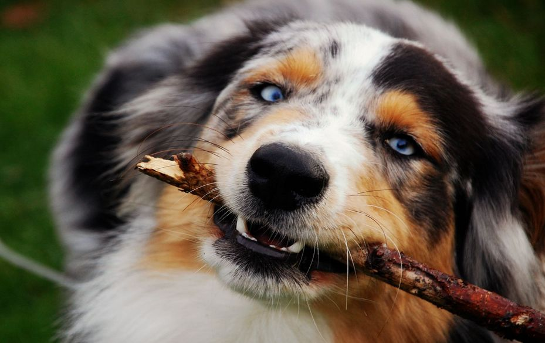
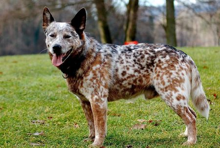
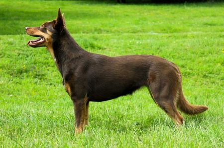
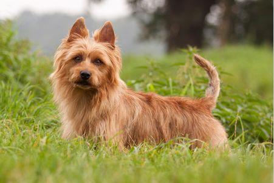

Автор: Иванов И. И.

Австралийская овчарка или аусси (англ. Australian Shepherd, Aussie) порода собак среднего размера, выведенная на ранчо в западных штатах США. Несмотря на название, они не имеют отношения к Австралии, родина их Америка. Популярность к австралийским овчаркам пришла после Первой мировой войны, через участие в родео, конных шоу и мультфильмах Диснея.
К статьеАвтор: Иванов И. И.

Австралийская пастушья собака или австралийский хилер (англ. Australian Cattle Dog) порода изначально появившаяся в Австралии. Пастушья собака, которая помогала перегонять стада через суровые земли. Среднего размера и короткошерстные, они бывают двух окрасов — голубого и красного
К статьеАвтор: Иванов И. И.

Австралийский келпи (англ. Australian Kelpie) это пастушья собака родом из Австралии, которая мастерски управляется со стадом без помощи хозяина. Среднего размера, она может быть практически любого окраса и сейчас в основном используется по своему назначению.
К статьеАвтор: Иванов И. И.

Австралийский терьер (англ. Australian Terrier) это маленькая декоративная порода собак, но несмотря на размеры — типичный терьер.
К статье